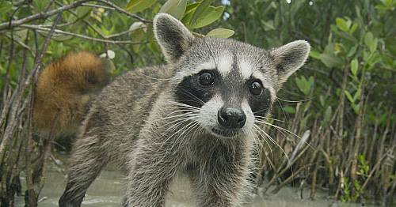

As of 2005, Mammal Species of the World recognizes 22 subspecies of Raccoons. Four of these subspecies living only on small Central American and Caribbean islands were often regarded as distinct species after their discovery. These are the Bahamian Raccoon and Guadeloupe Raccoon, which are very similar to each other; the Tres Marias Raccoon, which is larger than average and has an angular skull; and the extinct Barbados Raccoon. Studies of their morphological and genetic traits in 1999, 2003 and 2005 led all these island Raccoons to be listed as subspecies of the common Raccoon in Mammal Species of the World's third edition. A fifth island Raccoon population, the Cozumel Raccoon, which weighs only 3 to 4 kg (6.6 to 8.8 lb) and has notably small teeth, is still regarded as a separate species.
